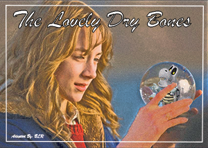
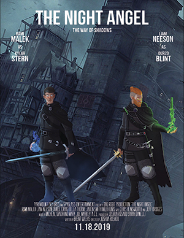
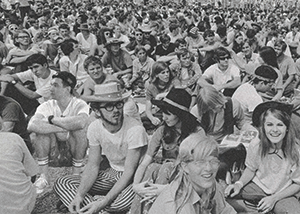

This is BLR's own rendition of a recreated movie poster for the movie "The Lovely Bones".
BLR has been a fan of the Super Mario Bros. since he was a child. It was actually the first game
he ever got his hands on. His father got a Super Nintendo Entertainment System when it came to the US,
and BLR absolutely loved it. His intrigue of creating for the screen was born.
Because of this, he wanted to incorporate Dry Bones into a movie poster that would
play off of his name. Dry Bones is one of the most iconic enemies in the series. Who better
to use in the poster?
Created in Adobe Photoshop for CMST 325 - Image Editing - 2018.
The Night Angel Trilogy Movie Poster

This is a fictional movie poster, created for the book series, "The Night Angel Trilogy" by Brent Weeks.
It is one of BLR's favorite book series that has yet to reach a screen, whether on television, or in theatres.
Maybe one day it will happen. BLR was not interested in reading growing up, he preferred video games. He felt he
learned more reading from games, than he could reading a book, due to more intrigue. His first language was spanish, so
understanding English texts was not the easiest for him in school. But video games taught him more about the language
than any book possibly could.
Created in Adobe Photoshop for CMST 325 - Image Editing - 2018.
BLR at Woodstock of 1969

BLR decided that he wanted to prove he was at Woodstock of 1969. Can you find him?
Woodstock is one of the most iconic events in history, let alone music festival history. Many people
know about it, and some would love to have been there for it. After attending many music festivals in his life,
BLR thought it would be a cool project to insert himself into the event, to tell people he was there (jokingly of course).
Created in Adobe Photoshop for CMST 325 - Image Editing - 2018.
Sasuke's Sharingan Evolution (From Scratch)
BLR loves the entirety of the Naruto Anime series, and Sasuke is one of the main characters.
The concept of the sharingan eye and how it evolves fascinated him, which is why he wanted to recreate
it for one of his design projects. The sharingan eyes have intricate designs, and the story of how
they evolve is a very sad one. The project was to create a diagram of some sort, so an evolution
made sense for the assignment.
Created from scratch in Adobe Illustrator for CMST 320 - Illustration Graphics - 2018.
EDM Lyfe Magazine Cover (Mockup)
BLR has been listening to EDM and Techno music for quite a long time now. He loves
going to shows, and music festivals, and has said it is the closest place to heaven on Earth.
For a project, he made a mockup of a fake magazine covering that topic. He would love to
some day make music, but that would also be another hobby, Life permitting of course. But
going to events to listen to other artists gives him plenty of drive and inspiration for other projects.
Created in Adobe Photoshop for CMST 311 - Adv Electronic Publishing - 2019.